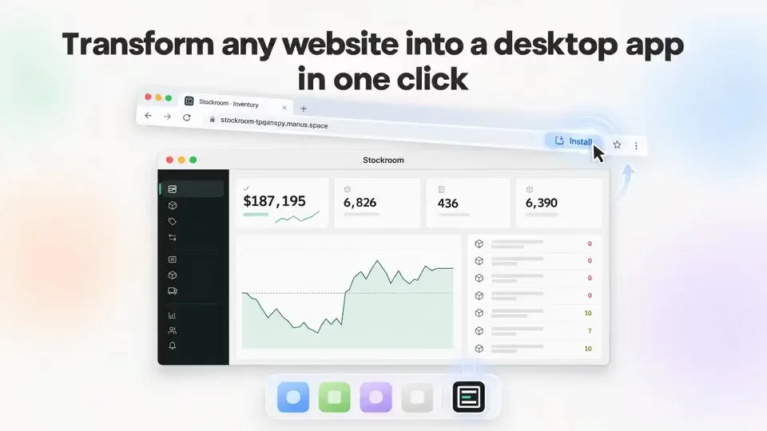
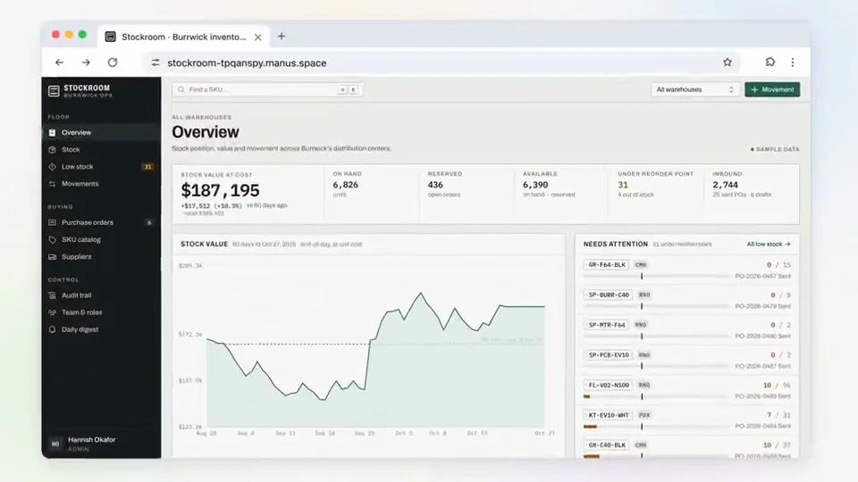
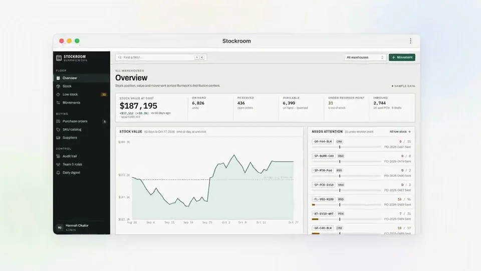
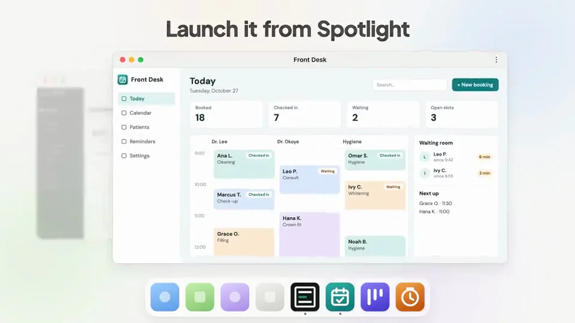
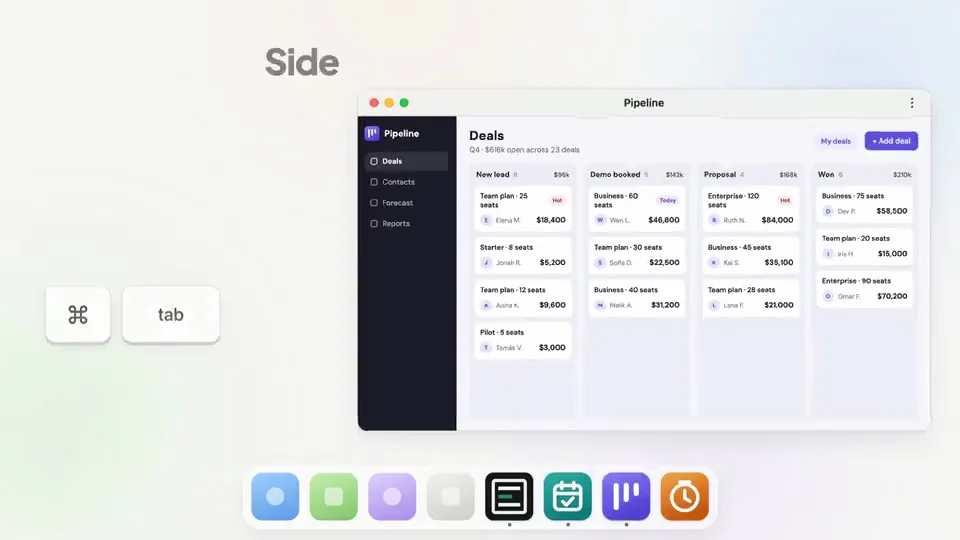
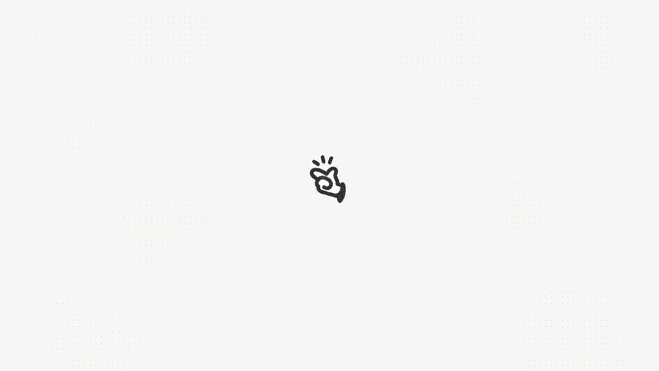

Manus / V045
Manus 做的网站能装成桌面 app
让同一个网站从浏览器进入桌面环境。内容保持不变，通过窗口容器、程序坞和快捷切换说明应用化之后的使用方式。
构图与编排 可播放 · 可替换内容
整体编排规则示例
查看 HTML 源码
<!doctype html><html lang="zh-CN"><meta charset="utf-8"><meta name="viewport" content="width=device-width,initial-scale=1"><title>Manus 做的网站能装成桌面 app · sequence</title><style>html,body{margin:0;width:100%;height:100%;overflow:hidden;background:#f7f8f6}canvas{display:block;width:100%;height:100%;object-fit:contain}</style><body data-mode="sequence"><canvas width="1000" height="600"></canvas><script src="data.js"></script><script src="common.js"></script><script src="scene.js"></script><script src="bridge.js"></script></body></html>画面元素浏览器窗口安装弹框独立窗口程序坞图标快捷键提示
MOTION LANGUAGE
动作与构图
局部动作 · 构图规则
01
安装动作改变的是容器
先展示网站，再推近安装入口与确认框。安装后网页内容从浏览器框中脱离，变成独立应用窗口；不要同时更换网页内容，否则观众容易理解成另一个产品。
02
用系统位置建立“已安装”的感觉
独立窗口出现后，在程序坞补上对应图标。系统搜索、快捷键切换和并排工作依次展示，让同一个图标与窗口在各场景中保持一致。
浅色背景、细边框与轻阴影突出窗口层次。界面文字用清晰无衬线字体，快捷键符号保持紧凑，强调色只用于安装与当前选择。
03
一组连续的桌面动作
一组连续的桌面动作规则示例
查看 HTML 源码
<!doctype html><html lang="zh-CN"><meta charset="utf-8"><meta name="viewport" content="width=device-width,initial-scale=1"><title>Manus 做的网站能装成桌面 app · sequence</title><style>html,body{margin:0;width:100%;height:100%;overflow:hidden;background:#f7f8f6}canvas{display:block;width:100%;height:100%;object-fit:contain}</style><body data-mode="clip" data-start="7.5" data-end="15"><canvas width="1000" height="600"></canvas><script src="data.js"></script><script src="common.js"></script><script src="scene.js"></script><script src="bridge.js"></script></body></html>搜索启动时先出现搜索词，再打开窗口；快捷键切换时先出现选择状态，再转到目标窗口。并排阶段保持窗口边界清楚，让空间关系自己说明工作方式。
04
替换为你的网站
准备同一网站的浏览器态和独立应用态，再补齐图标、应用名与搜索词。可以替换网站类型，保留安装、启动、切换、并排四个动作。
SEQUENCE
段落与节奏
点击段落，定位到上方编排示意。






画面参考 · 离散静帧
KEEP THE RELATIONSHIPS
制作其他主题
- 可迁移为网页到不同终端的转换，保留内容不变而容器改变
- 系统入口和快捷键需随目标平台替换
制作约束
浏览器窗口 / 安装弹框 / 独立窗口 / 程序坞图标 / 快捷键提示
- 同一网站从浏览器框中脱离成为独立窗口，内容身份保持
- 安装后程序坞增加对应图标，再演示启动与切换
- 最后窗口并排和堆叠说明系统级使用，动作不是无目的漂浮